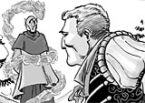

|
Creativity & The Creative Commonsby Shannon Appelcline This week Skotos released the first issue of Castle Marrach: Awakenings. Awakenings is a 20-page black & white comic book written by myself, illustrated by Bob Cram Jr., and set in the background of our online game, Castle Marrach. The story of the comic's genesis is an interesting one that I wrote more fully about in my last column. I'll wait if you want to go read that, but in short: we thought it would be a good way to introduce people to the gameworld, by depicting its vivid background in a fictional medium, and from there the comic pretty much wrote itself. However, there's another notable element of this event that's worth mentioned: we've released Castle Marrach: Awakenings #1 under a Creative Commons license that allows anyone to redistribute the comic, or make their own derivative works, provided that they're non-commercial, they attribute the original work to us, and they then share the results under the same license. I think it's very unique for Skotos to have released a full-length, professional-quality comic book in this form and I'm entirely impressed to be working at a for-profit company that's still willing to make this sort of statement about the value of joint creativity. About Creative CommonsIt's worth taking a minute to explain what Creative Commons is. You can of course find out more about the organization at their web site, but the basic idea is this: they provide licenses that allow creators to release their works for use by other people without actually giving up their copyright. Generally this falls into an ideology that's called "copyleft", which I discussed some in a column last year. Traditionally, creative works have been copyrighted, which means that a single creator holds on to the ownership of that work, and licenses it off to publishers or other media when those publishers want to use it. Sometimes creators instead release a work into the public domain, which allows other people to do whatever they want with the work, but results in the creator having no control over what that use might be. Copyleft methods, including Creative Commons, lay out a middle ground. Creative work can be released for other peoples' use, but under a proper license which curtails what places some limits on how the work can be used (and at the same time allows the creator to relicense the work to individuals if they want more expansive rights than what's initially offered). One of the things that makes Creative Commons cool is that it's not monolithic. Instead the organization offers a number of different licenses. Different licenses state whether attribution is required or not, whether the work can be used commercially or not, whether the work can be modified or not, and whether a Creative Commons license must be used if this occurs. Other copyleft licenses, such as Gnu's GPL, have fallen somewhat out of favor because they're all-or-nothing things. As Creative Commons says at their web site, they're trying to "define the spectrum of possibilities between full copyright ... and the public domain". Also cool is the fact that Creative Commons makes things easy. A few clicks on their website, and you have an image link to put on your web site. It leads to a simple explanation of the license, and then that leads to the full legalese. Why We Chose Creative CommonsJoint creativity has always been very important to us at Skotos. As far back as 2002 I wrote about how I thought player creativity needed to be a central focus in online games, and in the years since that belief has only grown. Frankly, it's impossible for a publisher to create enough original content to keep all the players of an online game constantly engrossed. Thus, you have two options: you either provide lots of repetitive content, or else you tap the creative potential of your players and let them add to your gameworld. Tapping the creative potential of players has been our top mission at Skotos from Day One. Central to our business was always the creation of a StoryBuilder Toolkit, which would allow players to run the games we created and eventually make games of their own. Castle Marrach was our first success; it's been in the hands of our players for years now, and is now full of new ideas, plots, and characters that we never would have conceived of. More recently we've seen early releases of the first two games created exclusively by our players, Lovecraft Country: Arkham by Night and Mortalis Victus. We've got some of our own methods to protect joint creativity at Skotos. In our Terms of Service we define what we call "Participatory Content" and "Public Content". If Creative Commons had been around when we launched in 2000, I think we might have incorporated their licenses instead, to protect the joint work that people do at Skotos. With Castle Marrach: Awakenings, however, we're doing something new, and thus we finally have the opportunity to offer a Creative Commons release without having to try and transition from an older license. Creative Commons very clearly matches our ideals here at Skotos--our belief that people can come together on the Internet and jointly create whole works that will be bigger than their parts. And, it helps us to do a little bit to fill the hole left behind by the destruction of the public domain, which I wrote about when I was discussing mythology (and its absence in the modern world). This is who we are. Will anyone do anything interesting with the Castle Marrach comic? I dunno, I hope so. People can use the artwork if they want and attribute it correctly, and I'm sure they will. That's a no-brainer. However, the release of this comic under a Creative Commons license opens up a whole variety of possibilities, including:
Some of those are far-fetched, some seem pretty likely. Castle Marrach's an interesting setting, and we've got some nice art and a good comic here, and I hope that the Creative Commons will help to make all of that available to others as well. ConclusionIn many ways, I think that copyleft agreements like the Creative Commons are on their way up. Their time has come. This is actually the second time that Skotos has released something under a Creative Commons license in the last month or so. Previously we used an attribution-sharealike license for the RPGnet Wiki. The Wiki is a cooperative web site where tabletop gamers can work together in order to create community game systems and game backgrounds. It's also become the home to a collection of roleplaying terminology and as of today an Encyclopedia Galactica of science-fiction settings has begun to take form. As with any Creative Commons project, I think the biggest hurdle in the RPGnet Wiki is going to be figuring out how to really work together on these creative endeavors. For a long time, most personal creativity has been individual, and now that Creative Commons gives us the opportunity to write games together or create comics together, we don't know entirely how to do it. However with concepts like Creative Commons, we have the ability. It's an interesting way to look at copyright, and one that makes a lot of sense for community web sites and other joint creative projects. I think we'll be seeing more of it in the future. [ <— #169: Mixing Mediums: An Overview | #171: The Elements of Good ScaryTelling: The Horror Within —> ] |